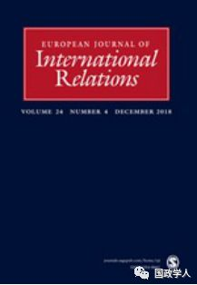
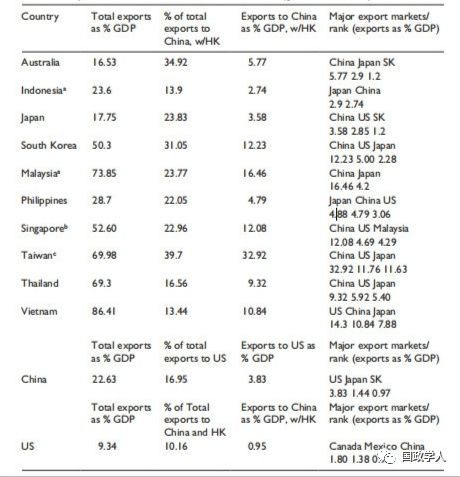

收录于合集

简 介
【作者】 Robert S.Ross，陆伯彬，波士顿学院政治学教授，哈佛大学费正清中国研究中心（John King Fairbank Center for Chinese Studies）研究员，对外关系委员会（the Council on Foreign Relations）和美中关系全国委员会（the National Committee for U.S.-China Relations）成员，其研究重点为中国的安全政策和国防政策、东亚安全以及中美关系。
【编译】 刘瑛琛
【审校】 杨艺华
【来源】 European Journal of International Relations, Volume: 25, Issue:1, Pages：302-327，https://journals.sagepub.com/home/ejt#
【期刊】 European Journal of International Relations,欧洲国际关系杂志（EJIR）是欧洲政治研究联盟国际关系常设小组（the Standing Group on International Relations of the European Consortium for Political Research, SGIR）的同行评审旗舰期刊, 由SGIR和欧洲国际研究协会组成的联合委员会共同管理。2017年该期刊的影响因子为2.545。

论经济实力的可转化性：中国经济崛起与东亚安全秩序
On the Fungibility of Economic Power: Chin’s Economic Rise and the East Asian Security Order

Robert S.Ross
内容提要
中国现在是仅次于美国的世界第二大经济体。中国经济的增长从根本上挑战了美国塑造世界贸易秩序的能力，相比之下，其对国际安全事务的重要性却并不明朗。分析国际政治与理解权力来源的关键点就是经济实力在国际安全事务中是否可以转化，以及经济实力能否单独决定小国的战略性联盟政策。这也是用以评估中国经济崛起对东亚安全秩序影响的关键问题。政治经济学的文献认为，经济依赖将会使小国不顾军事平衡而重新考虑同大国之间的结盟政策，但现实中却有部分案例与这些文献的结论不符。通过将当代东亚作为多个双边案例研究的来源，本文认为，小国对强大经济体的经济依赖不足以单独决定小国自身的战略性结盟行为，因此，中国日益增长的经济实力在东亚安全事务中也难以转化。
正文
1
** ** 引 言
在国际政治中，军事实力与经济实力是一国硬权力的两大来源。一国可以利用其目标国的脆弱性来影响目标国国内的物质福利，军事实力和经济实力的政治影响就源于此。两国之间这种脆弱性的不对称程度越高，大国对小国的政治影响力就越大。
政治经济学者认为，在双边关系中，权力来源于贸易赤字而非贸易盈余。 1947年，经济学家阿尔伯特·赫希曼（Albert O. Hirschman）在《国家权力与对外贸易结构》（National Power and the Structure of Foreign Trade）一书中首次提出以上观点。一方面，赫希曼等国际政治经济学家认为，小国对外出口有利于其经济发展与国内就业，进而有利于维护现任领导者的利益。为此，小国就会避免与其产品进口国产生矛盾以免失去市场。最终，这种经济依赖影响了一国政策。另一方面，产品出口国与投资接收国国内一些具有政治影响力的利益集团对大国的经济依赖加强，也是大国的贸易赤字能够产生权力的原因。赫希曼将这些既得利益者称为“商业上的第五纵队”，为了维护自身经济利益，他们可以影响小国的安全政策，重新定义一国的国家利益，从而促使新的战略同盟产生。
经济依赖在两个方面还需要进一步说明。 首先，我们必须考虑到，在第一大出口市场和第二大、第三大出口市场之间有着很大的区别。在经济不对称的情况下，第一大出口市场对出口国的经济影响力常常更胜一筹。其次，经济依赖反映的应当是对特定市场的出口额占一个国家GDP总额的比重。一国可能将其所有出口产品都出口到一个市场，但如果这些出口产品对该国GDP的贡献很小，经济依赖就是不存在的。
赫希曼等人对经济实力的可转化性作出了有力的声明，即仅凭经济依赖就能够强迫小国重新选边站队。 但在小国对大国军事实力和经济实力都具有脆弱性时，仅仅评估经济实力一个变量对小国产生的影响却十分困难。 当这两个自变量同时存在的时候，仅仅将小国重新结盟的原因归于强制性的经济影响力，这是一个方法论上的错误， 而在赫希曼等学者的论述中却忽视了这一方法论错误。 要想论证以上观点，必须选择合适的案例进行分析，即一个仅存在经济脆弱性但不存在军事脆弱性的国家。在欧洲历史上少有这类案例，但当前的东亚政治经济形势却恰好符合条件。 **因此，本文选择了 2014年东亚主要贸易国和地区的出口与GDP数据（详见表1）进行分析，**如果能够证明2014年中国通过其强大的经济实力影响了地区的安全结盟政策，那么将为赫希曼等人的观点提供有力的证据。需要注意的是，表1中的数据并未考虑全球生产网络以及进出口过程中产生的商品增值，并且将各国对中国香港地区的出口额算进了对中国的出口额之中。
**2
** 分析过程
**
**
Table 1. Exports trends for selected East Asian countries and areas(goods and services). 2014.

发现一： 中国经济崛起产生了两极中心辐射型的经济体系。
2014年，中国成为澳大利亚、日本、马来西亚、菲律宾、新加坡和泰国等国最重要的贸易出口国，与此同时，中国GDP的增长速度远超过另外两大经济体美国和日本，中国已经稳固了其区域贸易体系中枢纽的地位。
尽管中国是日本最重要的贸易出口国，但中国对日本GDP增长的影响并不大。与此同时，对一些具有政治重要性的国家如菲律宾、印尼和越南等，中国并不是他们最大的贸易出口国。因此中国并非一个区域性的经济霸权。
因此，东亚地区形成的是两极中心辐射性的经济体系，中美两国都是地区经济的支柱。同时，需要注意的是，中国GDP对美国市场的依赖要远远大于美国GDP对中国市场的依赖，这种不对称的经济脆弱性也限制了中国使用强制性的经济权力挑战美国在东亚地区的安全同盟的可能。
发现二： 台湾地区与韩国调整了战略同盟政策，但这种调整过于自信。
台湾地区和韩国GDP的增长都严重依赖中国市场。（2014年，韩国将近15%的GDP依赖对中国的出口，台湾地区则有25%的GDP依赖对大陆的出口。）与此同时，台湾地区与韩国都经历了中国相对于美国而言的相对军事力量的增加。在这种情况下，台湾地区改善了与中国大陆的政治关系，韩国自2005年以来则在不断适应中国的安全利益。但台湾地区和韩国与中国的合作过于确定了，因为本应有多个变量影响他们安全政策的调整。
发现三： 新加坡、马来西亚与澳大利亚三国对中国的贸易脆弱性伴生着战略稳定性。
新加坡、马来西亚和澳大利亚这三个东亚国家对中国潜在的经济强制力具有明显的脆弱性。从表1可以看出，2014年，中国是新、马、澳三国最大的出口市场，同时三国的GDP增长也都严重依赖中国市场。（对中国市场的出口占到了新加坡GDP的12%，马来西亚GDP的大约16.5%，澳大利亚GDP的大约5.8%。）
不过，对此三国而言，中国的军事实力虽然有所增长，但尚不能与美国相比，所以他们仍然是美国在东亚地区的军事盟友。新加坡在与美国的军事合作中一直相当积极，马来西亚从2005年以来始终在增加与华盛顿方面的防务合作，澳大利亚与美国的防务合作也在不断增加。中国的市场权力并未影响到这些国家的同盟政策，相反，随着中国市场权力的提升，对中国具有经济依赖性的东亚国家反而会在军事上更倾向于美国。
**3
** 结论与贡献
根据文中的分析，中国的国际政治与经济影响力并未对东亚的战略秩序或美国的安全利益产生影响。 第一，对大多数东亚国家而言，中国市场与美国市场同等重要，因此美国和中国都不具有可用以实现政治目的的地区性经济权力。第二，虽然东亚地区可能会形成一个以中国市场为基础的区域贸易体系，但东亚仍处于世界市场之中，这不利于形成中国主导的区域贸易秩序。第三，中国的经济实力在国际安全事务中并未转化，相反，多数东亚国家在对中国经济依赖增长的同时，加强了与美国的战略合作。
本文的贡献主要有以下三点。
首先，本文补充了罗伯特·帕克（Robert Pape）对经济制裁独立效力的研究结果。
其次，本文的研究有利于我们理解国际政治中权力的可转化性。通过本文的案例，我们发现，强制性经济力量无法单独影响小国的安全政策，而军事力量却可以单独决定小国的安全政策。对中东和欧洲的研究则体现出军事力量可以独立塑造一国的国际经济政策。所有这些结果表明，在国际政治中，军事实力比经济实力更具有可转化性。
最后，本文的研究结果表明，中国的“一带一路”倡议将会使中国成为区域贸易体系的枢纽，但这并不足以重塑区域安全秩序。不过，经济实力是军事实力的基础，经济实力的这一可转化性表明，东亚地区的战略秩序并不是固定的。中国经济的持续发展将不断提升中国的科技力量，扩张中国的军事开支，因此中国的军事实力逐渐地能够与美国匹敌。最终，这一趋势而非中国的市场权力将重塑东亚地区安全秩序。
译者简评
本文作者的确具有极强的问题意识。首先，中国经济实力的增长是否会影响东亚地区安全秩序，这的确是当下一个值得关注的问题。其次，面对“经济实力能够转化为政治影响力”的论断，作者敏锐地意识到，经济实力常常与军事实力并存，而以往的研究并未对此进行区分，所以，在本文的论述中作者极力避免这一方法论上的错误。尽管如此，作者在文章中所犯的方法论错误还是无法掩盖的。其一，在东亚地区，各国对中国的确仅有经济上的依赖性而无军事上的依赖性，但对美国则是二者并存。因此，作者在对中美两国进行比较时，所用以比较的变量并不一致，因此其结论缺少说服力。其二，经济实力可以为一国军事力量建设提供物质基础，从本质上讲，经济实力也是可以转化为政治影响力的，这一点作者在文章结尾中也不得不承认，但在论述过程中却缺少说明，这也是一大失误。
**本文由国政学人微信平台独家编译首发**
更多阅读
【重磅速递】约瑟夫·奈：美国霸权的兴衰：从威尔逊到特朗普 | 国政学人
【重磅推荐】巴里·布赞：英国学派视角下的中国崛起 | 国政学人
【重磅速递】米尔斯海默：注定失败：自由主义国际秩序的兴衰 | 国政学人
【国际组织】IO杂志：联合国维和行动的武力运用问题研究 | 国政学人
【国际秩序】为什么自由主义国际秩序理念将美国外交政策引入歧途？| 国政学人